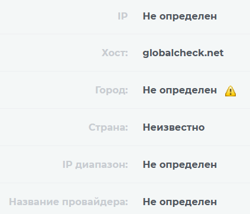

Уже который день пытаюсь зайти на их сайт, но в ответ лишь “Хмм. Нам не удаётся найти этот сайт.” (как напрямую, так и через прокси).
Whois сервисы отдают “ip адрес не найден”, выходит, их серера лежат?
В телеге и X последние посты от 15 ноября и никаких упоминаний о технических работах, возможно кто-нибудь знает, в чём дело? 

Выходит для этого домена не существует А-записи DNS
Вообще, хотелось бы услышать ответ от представителя этого сервиса. Потому что после шумихи с Ютуб (когда доступность Ютуб проверяли с помощью ГлобалЧек - после встречи Шахназарова и Путина, на которой последний пообещал разобраться с вопросом), а потом еще официального заявления Роскомнадзора (что ГлобалЧек не может показать наличие проблем с Ютуб) - как-то немного беспокойно. Потому что могли и прикрыть.
У нас цензуру ужесточают, а тут сервис для мониторинга запрещенных сайтов.
Поэтому пожалуйста отзовитесь те, кто связан с сервисом - что там у вас случилось?
Спрашивайте у @Vladislav_Z (@zd_vladislav в твиттере)